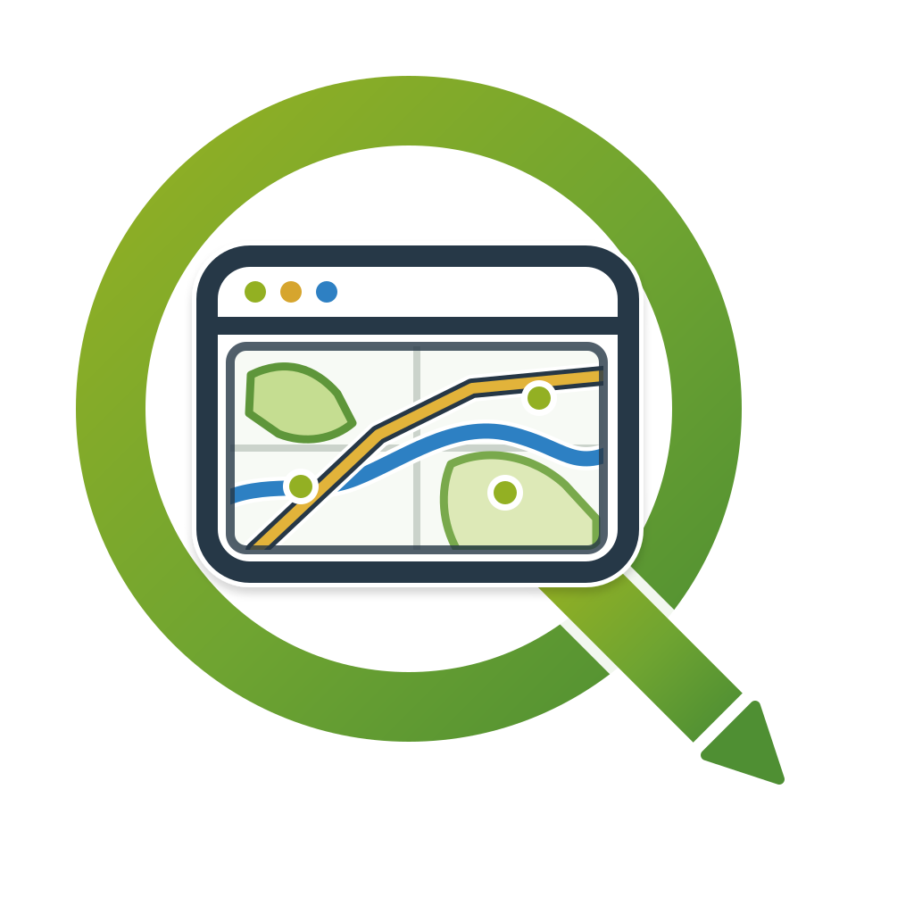
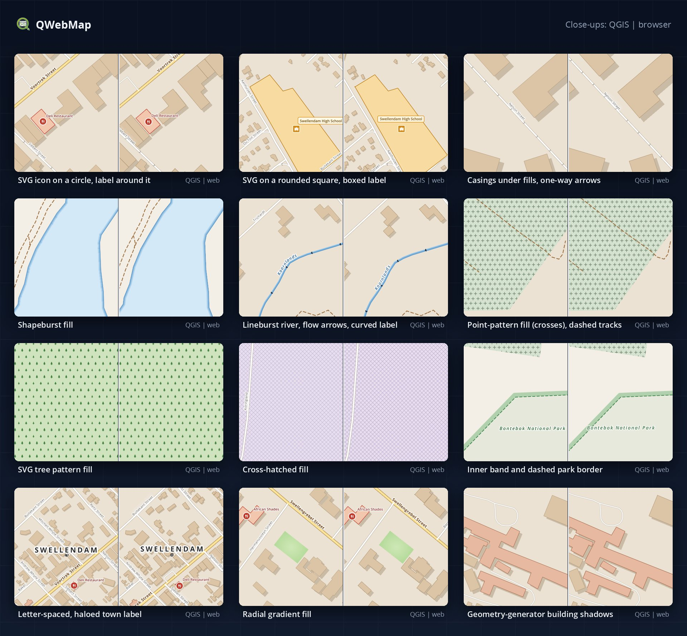

QWebMapThis map of Swellendam was styled in QGIS and published with QWebMap's Publish Web Map window: no hand-written web style. Pan, zoom, click the features, search for a street.
Every symbol below is converted from the QGIS project; what the browser cannot draw natively is rendered by QGIS into sprites or pre-computed geometry.
Rule-based roads with casings and symbol levels, one-way arrows, dashed footpaths.
Hatched and point-pattern fills, SVG tree patterns, shapeburst water, gradients, geometry-generator building shadows.
Lineburst rivers with flow arrows, a curved arrow for the heritage walk, an inner band along the park border.
Curved river labels, haloed and boxed labels, a letter-spaced town name, SVG icons on circles.
Use the search box: try Voortrek, Drostdy or Bontebok.
Layers and legend, popups, measuring with snapping, share links, print, dark mode, phone layout.
The same project in QGIS (left) and in the published web map (right), at the same views; then a swipe between the two.
Each pair: QGIS on the left, QWebMap on the right.

Download the QGIS project behind this map, open it next to the web map and compare them view by view. The zip holds the project, its data (relative paths, so it opens from any folder) and the Open Sans fonts of its labels; the Publish window settings of the demo are saved in it.
fonts folder and restart QGIS (without them the labels use another font).Swellendam.qgz in QGIS 3.44 or newer.A published QWebMap map is a static web page, so it can go into any page with an <iframe>. Use your own map's address in place of this demo's; ?embed gives the compact embedded view (panel closed, Ctrl + scroll to zoom, a link to the full map).
<iframe src="https://danzig666.github.io/QGIS2VectorTiles/demo/?embed"
width="100%" height="520" style="border:0"
allow="fullscreen; geolocation" allowfullscreen loading="lazy"
title="Swellendam web map"></iframe>